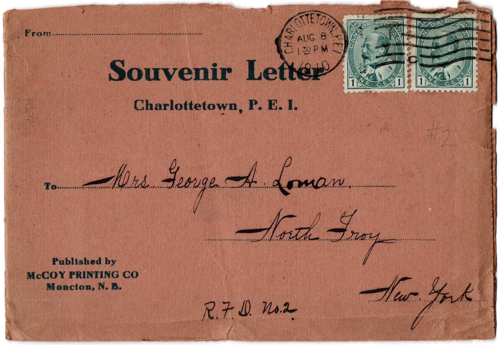
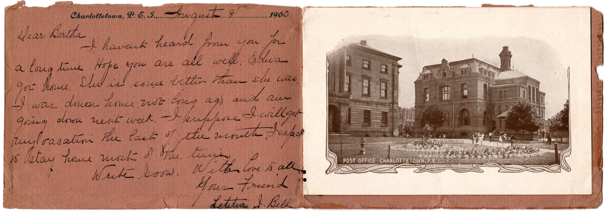
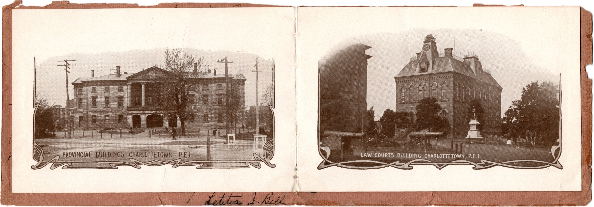
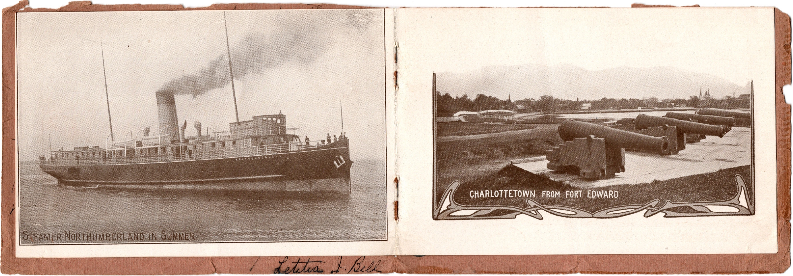
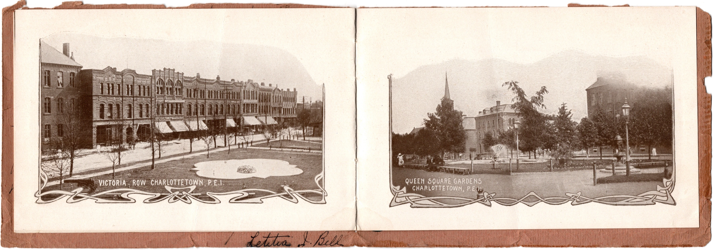
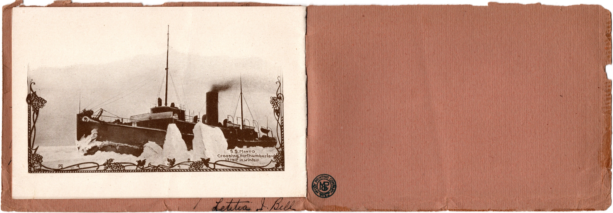

← Return to Eight Views in One Letter: McCoy’s Charlottetown Souvenir
The complete souvenir letter
The six scans in reading order, including the wrapper, Letitia Bell’s letter and all eight views. Mailed 8 August 1910.
1. Front wrapper and postal address

2. The letter and Post Office

3. Provincial Buildings and Law Courts

4. Northumberland and Fort Edward

5. Victoria Row and Queen Square Gardens

6. Minto and inside back wrapper
